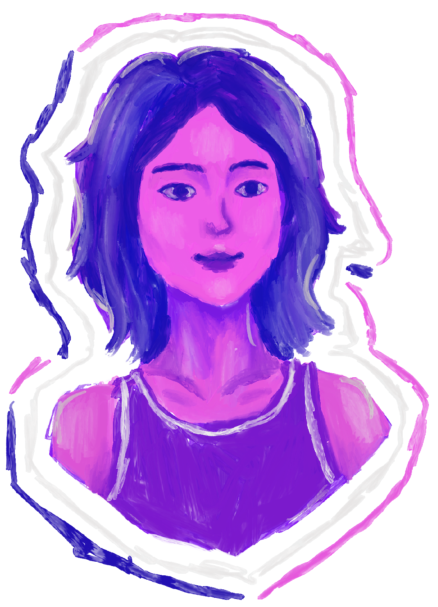
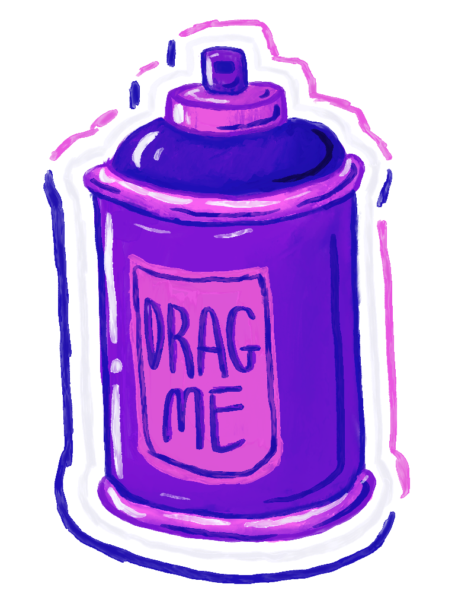

Enter the archive


welcome
arielsie archive

Yuanxi Arielsie Ari Elle Elsie Ariel Li is an avid daydreamer who loves to invent things in her head. Such as her name. Her friends and family occasionally catch her pacing in small circles with headphones on while mumbling something, and some of them find it a bit terrifying, so she has learned to not do that in front of people. When she is not doing that, Ari (preferred name at the moment) also enjoys making doohickies, learning physics and philosophy, and writing about people, animals, or societies pacing in a circle (literally and metaphorically). She believes that art can save the world. You can save the world. She also wishes to own four rats, along with a company that can revolutionize the human experience, one day.
For now, just have some fun with the four rats on this site.
